De la pasionati de sporturi montane la cei ce doar cauta un loc linistit sau chiar pentru cei ce indragesc istoria sau basmele, satul Ciunget dispune de toate acestea.
Cu un numar considerabil de pensiuni satul Ciunget ofera o gama variata de locuri de cazare, atat pe marginea raurilor cat si in varful muntilor.
Obiective turistice:
Raurile Latorita si afluentul sau Rudareasa, cele 2 rauri ce inconjoara satul si despart cei 3 munti denumiti si fortificatia Ciungetului.
Pe raul Latorita se gasesc numeroase cascade si doua baraje construite pentru Hidrocentrala Lotru
Cea mai mare cascada din Romania se afla in imediata vecinatate a Ciungetului.Denumita si cascada lui Ciuca dupa cel care a promovat-o,dar cu un nume vechi dacic cunoscuta de localnici ca si cascada Scorusuilui .Cascada are aproximativ 80 de metri inaltime, fiind, astfel, cea mai inalta cadere de apa din tara noastra.
Hidrocentrala Lotru poate fi vizitata cu aprobare
Partia de schi Vidra, cu cel mai mare domeniu schiabil din Romania la acest moment. Cu o promovare insuficienta si concurand cu domenile schiabile cu renume din tara. acest punct turistic are o expansiune greoaie dar continua, are potentialul de a ajunge cea mai fregventata partie din Romania.
Drumurile montane, poate cel mai frumos obiectiv turistic folosite in ultimui ani si la concursuri de alergare,biciclism si motociclete pun in legatura toate celelalte obiective creand paradisul perfect pentru iubitori de sport si natura
 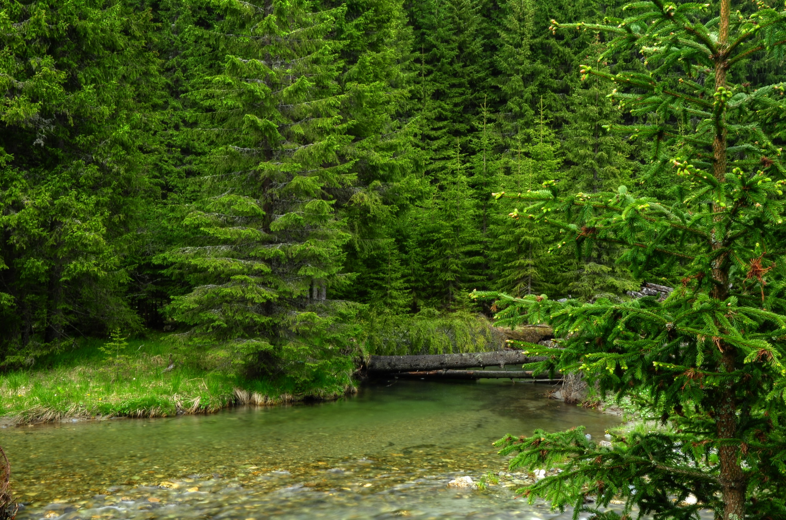
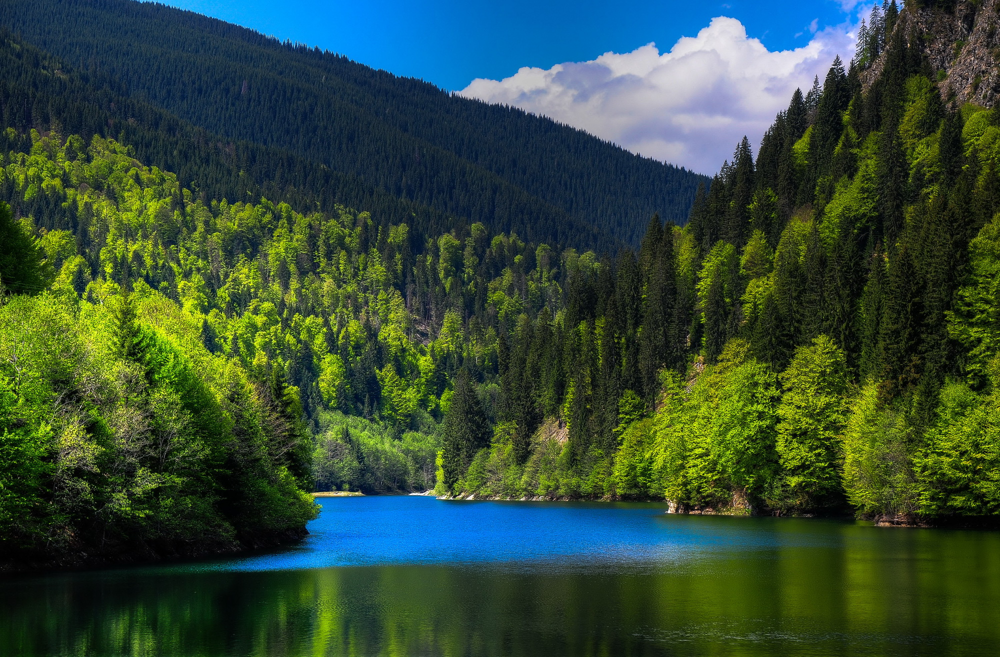
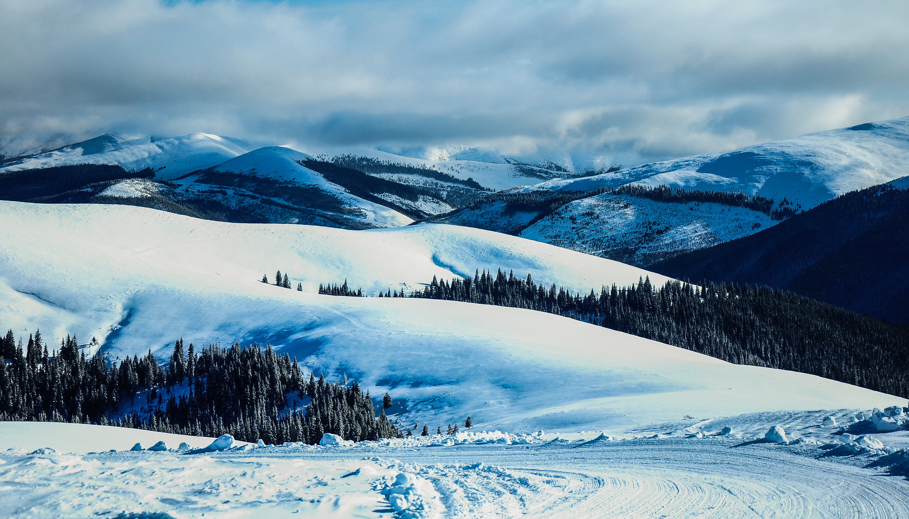
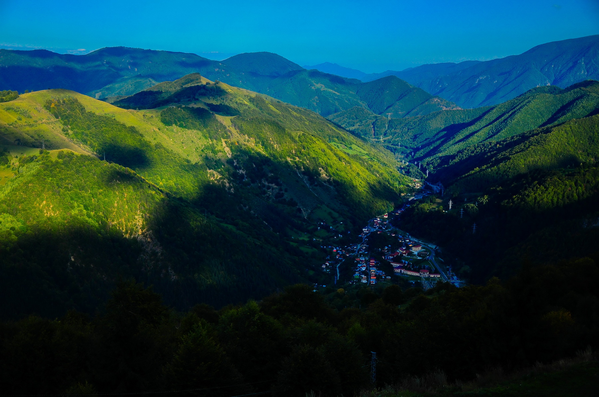
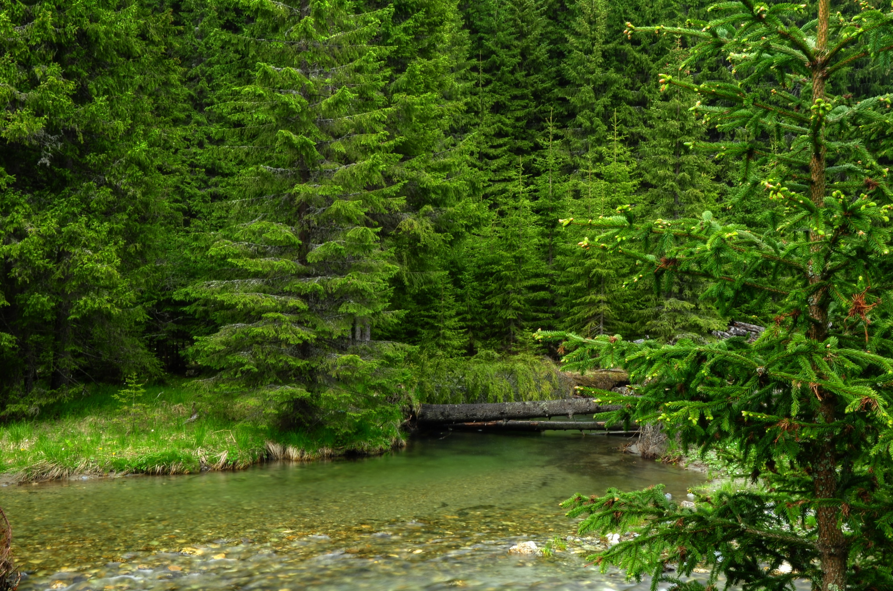
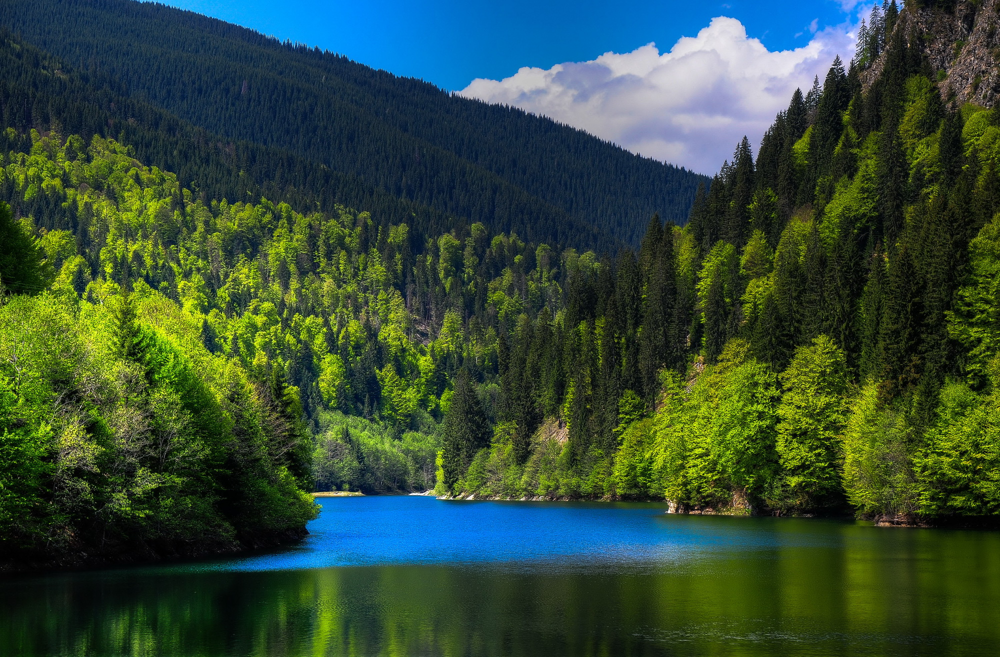
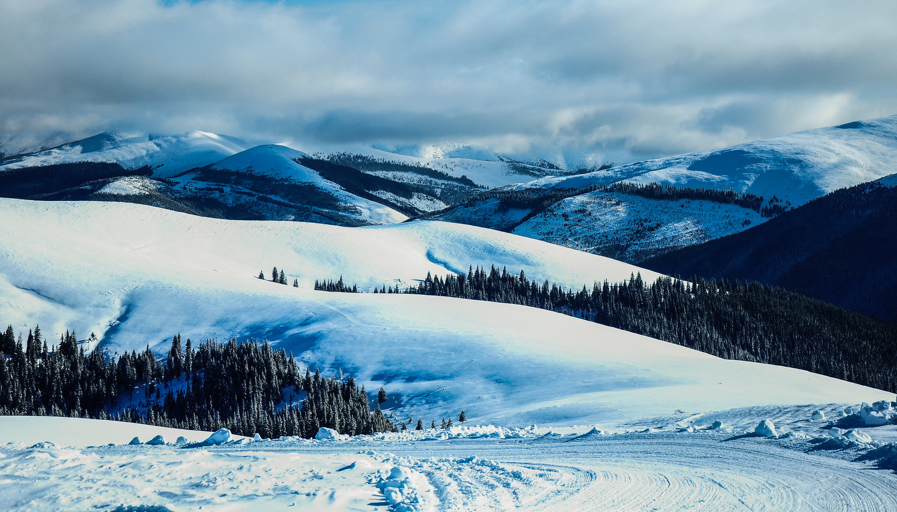
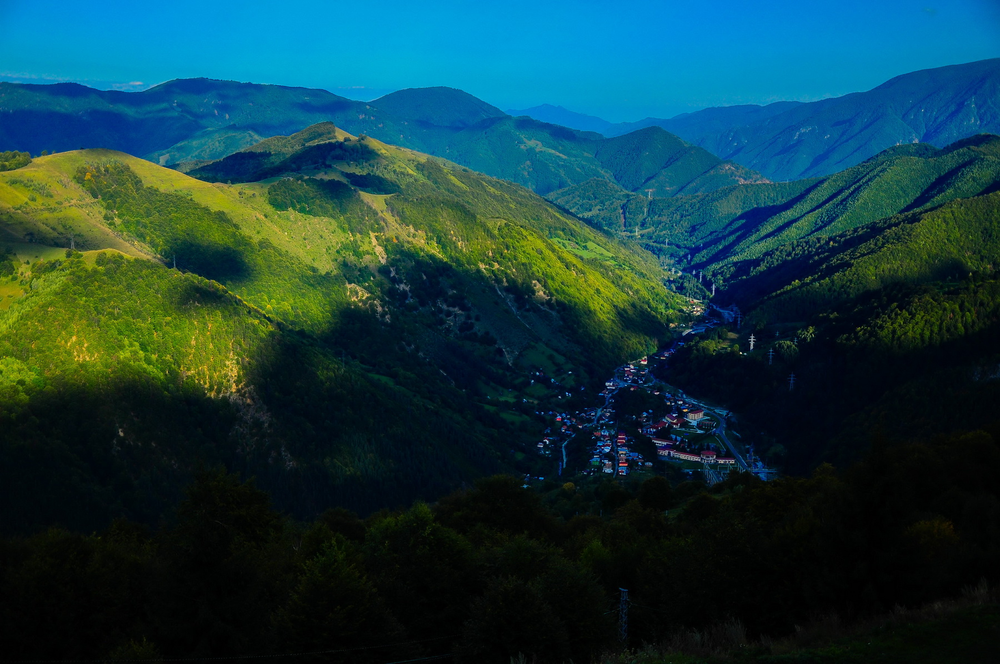
 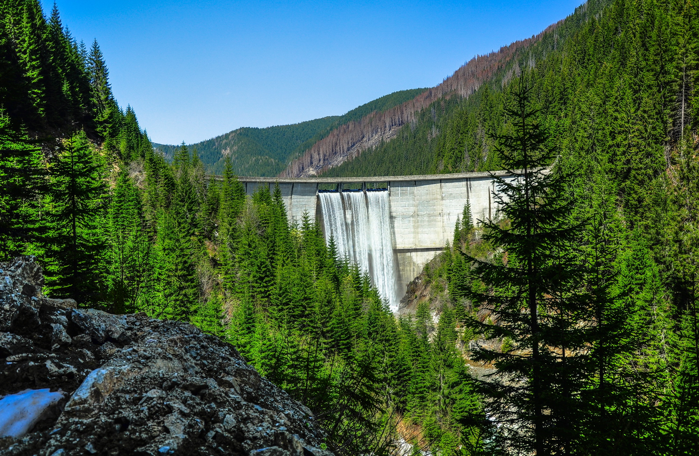
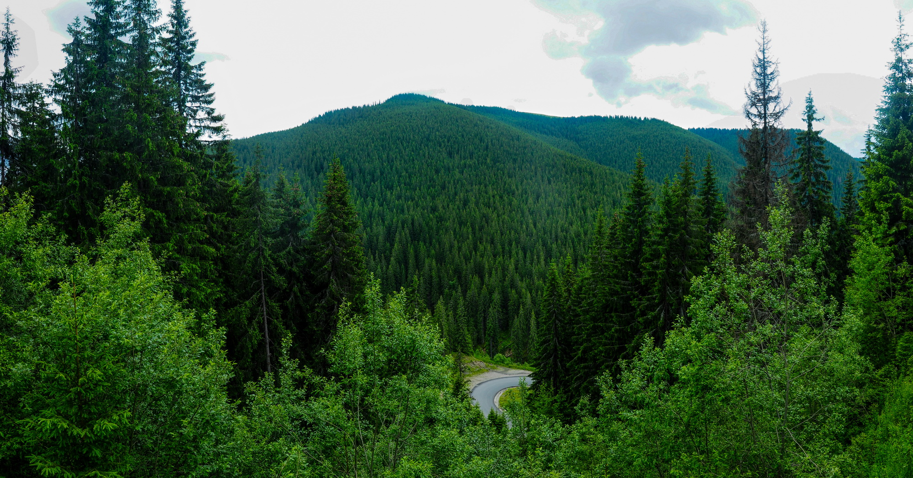
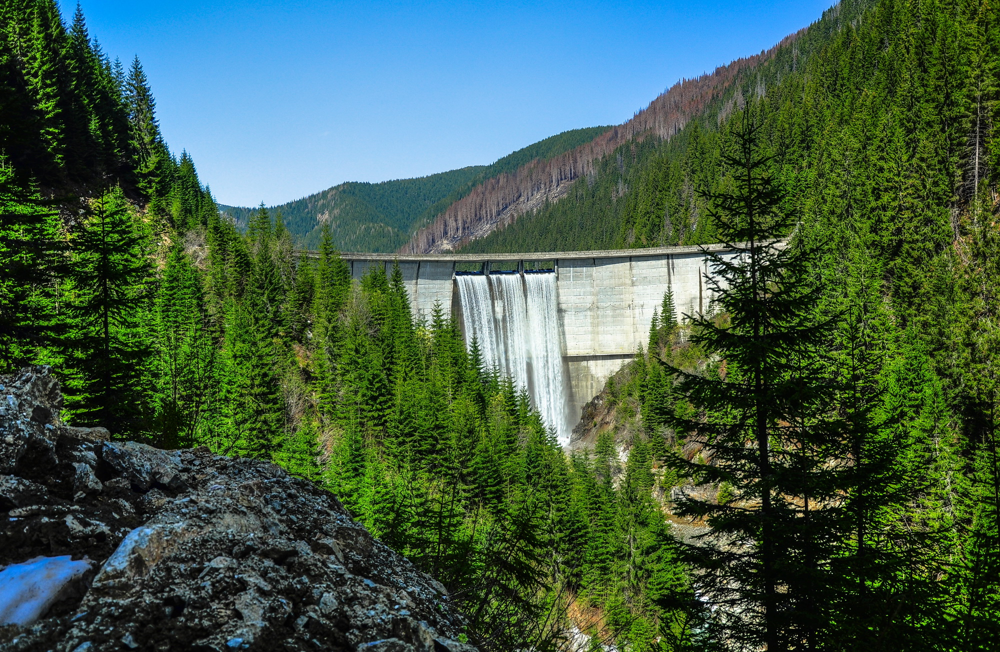
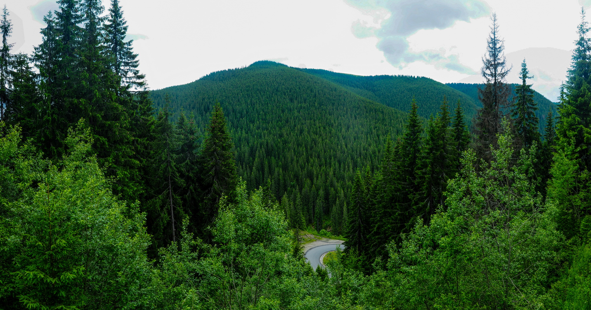